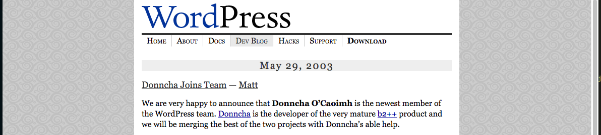
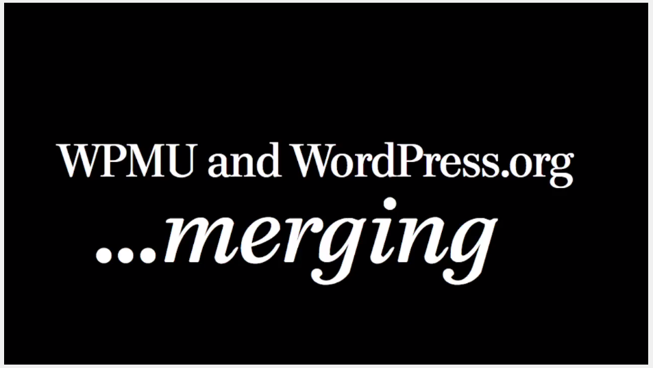

- Context
- Structure
- Awareness
- Extension
- Context
- Structure
- Awareness
- Extension
b2
???
January 24, 2003
b2-smarty
February 27, 2003

b2++
April 17, 2003

WordPress
May 26, 2003

WordPress + b2++
May 29, 2003

WordPress Multiuser 0.1
October 4, 2004

WordPressμ
July 12, 2005

WordPress.com
August 8, 2005 | 142 changesets
The first beta release.
WordPress.com
September 28, 2005 | 378 changesets

WordPress.com
November 21, 2005 | 443 changesets
Public release.
WordPress MU 1.0
October 10, 2006 | 801 changesets

WordCamp San Francisco
May 29, 2009 | 1789 changesets
#11644
December 27, 2009 | 2041 changesets

[12602]
January 5, 2010 | 2044 changesets

#11644 (Fixed)
March 21, 2010

WordPress 3.0 "Thelonious"
June 17, 2010
Use it to power one site, or 10 million. Straight, no chaser.
- Context
- Structure
- Awareness
- Extension